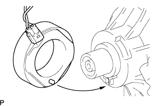
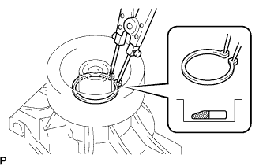

クーラーコンプレッサASSY 取り付け |
| 1. マグネット クラッチASSY取り付け |
|  |
マグネツトクラツチステータをクーラコンプレツサASSYの図の位置に合わせて取り付ける。
|  |
SSTを使用して、新品のスナツプリングの面取り側を上にして取り付ける。
コネクタを接続し、スクリユーでクランプを取り付ける。
マグネツトクラツチロータを取り付ける。
SSTを使用して、新品のスナツプリングの面取り側を上にして取り付ける。
マグネツトクラツチハブを取り付ける。
バイスプライヤーを使用して、マグネツトクラツチハブを固定し、ボルトで締め付ける。
| 2. マグネットクラッチエアギャップ点検 |
ダイヤルゲージをマグネツトクラツチハブに垂直にセットする。
マグネツトクラツチコネクタ1端子にバツテリーのプラス、アースワイヤにバツテリーのマイナスを接続し、マグネツトクラツチをON←→OFFさせたときのエアギャップを測定する。
基準値外の場合はマグネツトクラツチハブをはずし、マグネツトクラツチワツシヤで調節する。
| 3. コンプレッサオイル量点検 |
新品のクーラコンプレツサASSYに交換する場合は、サービスバルブから徐々に冷媒ガスを抜いた後、新品のクーラコンプレツサASSYから次のオイルを抜き取ってから取り付ける。
| 4. クーラコンプレッサ W/マグネットクラッチASSY取り付け |
ボルト４本で、クーラコンプレツサ W/マグネツトクラツチASSYを取り付ける。
コネクタを接続する。
| 5. クーラリフリザラントディスチャージ ホース NO.1取り付け |
配管の接合部に巻いたビニールテープを取りはずす。
新品のOリングおよびクーラコンプレツサASSYの接合部にコンプレツサオイルを十分に塗布する。
ボルトで、クーラリフリザラントデイスチヤージホースNo.1をクーラコンプレツサASSYに取り付ける。
| 6. クーラリフリザラントサクション ホース NO.1取り付け |
配管の接合部に巻いたビニールテープを取りはずす。
新品のOリングおよびクーラコンプレツサASSYの接合部にコンプレツサオイルを十分に塗布する。
ボルトで、クーラリフリザラントサクシヨンホースNo.1をクーラコンプレツサASSYに取り付ける。
| 7. ファン ＆ オルタネータ Vベルト取り付け |
Vベルトを各プーリに仮付けする。
| 8. ファン ＆ オルタネータ Vベルト調整 |
 |
ハブナットレンチまたはバーなどを使用して、オルタネータを車両フロント側に引いて、フアン & オルタネータVベルトの張力を調整する。
 |
調整用ボルトAを締め付けてから、固定用ボルトBを締め付ける。
| 9. Vベルト張力·たわみ量点検 |
| 10. 冷媒 HFC-134a[R134a]充填 |
真空ポンプを使用して、真空引きを行う。
冷媒HFC-134ａ(R134ａ)を充てんする。
| 11. 冷媒ガスもれ点検 |
| 12. エンジンアンダ カバー RH取り付け |
スクリュー2個およびボルト2本で、エンジンアンダーカバーRHを取り付ける。
ナットを、締め付ける。